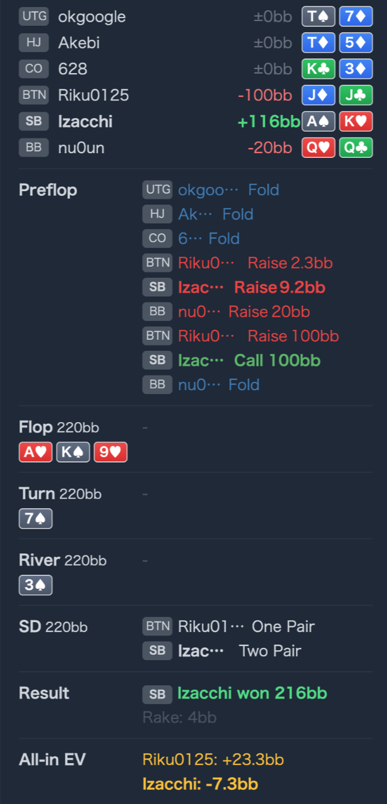

Preflop BTN Riku0125 J♦J♣
自然JJ はこの node で「強いが flat しにくい」hand で、jam にかなり回りやすい帯です。
主論点は、BTN open に対する SB 3bet、BB cold 4bet、BTN 5bet jam、SB call、BB fold という 3way preflop all-in を、参加した 3 人それぞれの立場でどう評価するかです。提示された GTO Wizard の近似 node（BTN 2.5BB open -> SB 11BB 3bet -> BB 24BB cold 4bet -> BTN jam）を基準線に置くと、結論は前回と逆で、BTN J♦J♣ の jam は自然、SB AKo の call はやりすぎ、BB Q♥Q♣ の最終 fold も自然です。showdown で SB が勝っていても、preflop 判断は runout と切り分けて扱います。
Izacchi SB A♠K♥Riku0125 J♦J♣ / BB nu0un Q♥Q♣A♥ K♠ 9♥ / 7♠ / 3♠GTO Wizard の近似 node では、BTN J♦J♣ jam は自然で、SB AKo call はやりすぎ、BB Q♥Q♣ fold も自然です。BTN Riku0125 の J♦J♣ jam が成立する主因は、BB cold 4bet が入ったあとに flat で残る line の実現率が悪いからです。SB を残した低 SPR の 3way pot を避けつつ、BB の 4bet range に含まれる fold 成分へ圧をかけられるので、JJ は「挟まれているから弱い」より「flat しにくいから jam が立つ」と見る方が GTO に近いです。SB Izacchi の A♠K♥ 3bet 自体は自然です。ただし BB 20BB cold 4bet -> BTN jam を見てからの AKo call は、AKs より一段弱く、しかも BB がまだ uncapped で残ります。blocker と dead money だけで押し切るより、multiway での実現率低下を重く見る node です。BB nu0un の Q♥Q♣ cold 4bet は value ですが、最終判断は 価格 より 条件付きレンジの強さ が先です。BTN jam は open range よりかなり強く、そこに SB が call した時点で SB 側もさらに凝縮します。QQ は一見 price が良くても、その 2つの continue range に同時に当たると fold が自然になります。pot odds を pre-node の大まかな range に当ててしまったことと、flat の質 や uncapped player が後ろに残る不利 を軽く見たことから起きています。Izacchi SB A♠K♥Riku0125 J♦J♣ / BB nu0un Q♥Q♣2.3BB, SB 3bet 9.2BB, BB cold 4bet 20BB, BTN jam 100BB, SB call 100BB, BB foldA♥ K♠ 9♥ / 7♠ / 3♠Q♥Q♣ fold
Riku0125 J♦J♣自然JJ はこの node で「強いが flat しにくい」hand で、jam にかなり回りやすい帯です。
Izacchi A♠K♥やりすぎAKo は 3bet の主力でも、この all-in tree では AKs より落ち、fold 側に寄りやすい combo です。
nu0un Q♥Q♣自然QQ は 4bet value でも、closing spot では 2 本の強い continue range に挟まれるため fold が自然です。
結果と判断は切り分け
ただしこれは preflop 判断の答えではなく、あくまで結果です。
| 論点 | その場で起きがちな見え方 | どこがズレたか | 次回の基準 |
|---|---|---|---|
BTN Riku0125 の J♦J♣ jam | cold 4bet に挟まれているので、JJ は jam より降ろされる側に見えやすい | ここでは raw hand strength より flat の質 が重要です。BB 4bet に call して SB を残す line は JJ の実現率が悪く、jam の方が tree を単純化しつつ BB の fold 成分を取れます。 | 3bet pot で挟まれた = jam 減少 と決め打ちせず、flat が良い line か を先に見る |
SB Izacchi の A♠K♥ call | blocker と dead money が大きいので、AK は受けてよさそうに見える | 問題は AK 一般ではなく AKo であることと、BB がまだ残っていることです。BTN jam を受けた時点で BTN 側は強くなり、そこへ BB の overcall も残るので、offsuit の実現率低下が効きやすいです。 | 3bet -> cold 4bet -> jam で未行動が残るなら、AKo は AKs よりかなり慎重に扱う |
BB nu0un の Q♥Q♣ 4bet / fold | closing で price が良いので、QQ は call が得に見える | price は大事ですが、当てる相手 range を間違えると逆方向へズレます。BTN jam range は open range ではなく jam に進んだ強い部分で、さらに SB call range も 3bet range より凝縮しています。QQ はその 2本に同時に晒されるので、fold が自然になります。 | closing では 何%必要か の前に、その価格をくれる時の continue range はどれだけ強いか を確認する |
| ストリート | その時点の見え方 | 実ハンドの位置づけ | 評価 | その場の一手 |
|---|---|---|---|---|
Preflop BTN Riku0125 J♦J♣ | BTN open に対する SB 3bet と BB cold 4bet でかなり強い tree に入りますが、call line は SB を残した低 SPR multiway になりやすいです。 | JJ はこの node で「強いが flat しにくい」hand で、jam にかなり回りやすい帯です。 | 自然 | jam は GTO基準で十分自然です。挟まれているから fold ではなく、flat の質が悪いから jam で整理します。 |
Preflop SB Izacchi A♠K♥ | BTN open に対する SB 3bet は自然です。ただし BB cold 4bet のあとに BTN jam まで入ると、continue 条件はかなり厳しくなります。 | AKo は 3bet の主力でも、この all-in tree では AKs より落ち、fold 側に寄りやすい combo です。 | やりすぎ | 3bet までは良いです。jam に対しては AKo を基準線の continue に置かず、まず fold を起点に見ます。 |
Preflop BB nu0un Q♥Q♣ | QQ の cold 4bet 自体はかなり自然です。size は小さめですが、最終判断では BTN jam と SB call で両者の range が大きく締まります。 | QQ は 4bet value でも、closing spot では 2 本の強い continue range に挟まれるため fold が自然です。 | 自然 | 4bet はそのままでよく、最終は fold 寄りで問題ありません。価格だけで call に寄せない方がよいです。 |
| Board / Showdown | 走った board は A♥ K♠ 9♥ / 7♠ / 3♠ で、SB の AK が two pair になりました。 | ただしこれは preflop 判断の答えではなく、あくまで結果です。 | 結果と判断は切り分け | runout はメモに留め、review は preflop node だけで評価します。 |
なぜそうなるか を line の質から説明した方がぶれにくいです。pot odds を見る前に action が進んだ後の条件付きレンジ を見る必要があります。pre-node の大まかな range をそのまま当てるとズレやすいです。JJ のような middle-high pair は、今どれだけ強いか だけでなく flat した後の line がどれだけ悪いか で jam が増えることがあります。AKo と AKs の差は、単に数％の EQ 差ではなく、multiway all-in での実現率差として効くことがあります。JJ jam は exploit でもさらに押しやすくなります。cold 4bet -> call off が極端に tight な相手ばかりなら、BTN jam の利益は落ちやすく、SB AKo fold はなおさら実戦的です。QQ はさらに降りやすく、逆に両者が underjam / undercall なら call が戻る余地があります。